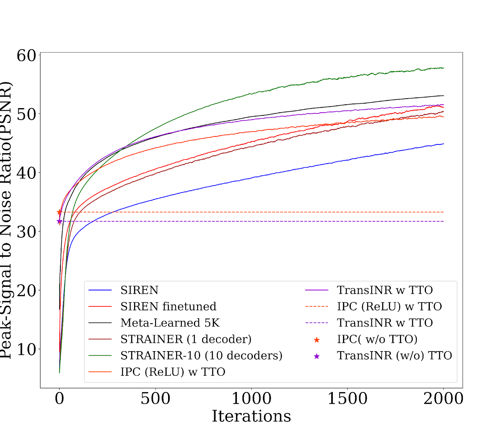
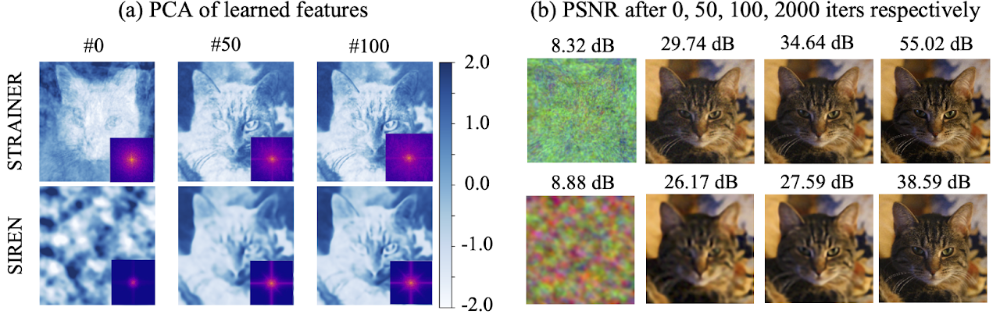
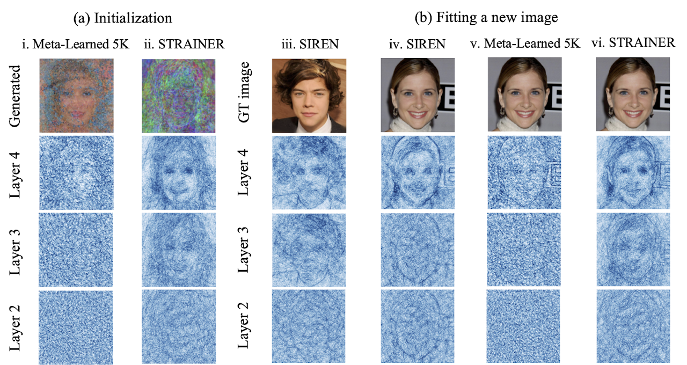

STRAINER - Learning Transferable Features for Implicit Neural Representations. During training time (a), STRAINER divides an INR into encoder and decoder layers. STRAINER fits similar signals while sharing the encoder layers, capturing a rich set of transferrable features. At test- time, STRAINER serves as powerful initialization for fitting a new signal (b). An INR initialized with STRAINER’s learned encoder features achieves (c) faster convergence and better quality reconstruction compared to baseline SIREN models.
Abstract: Implicit neural representations (INRs) have demonstrated success in a variety of applications, including inverse problems and neural rendering. An INR is typically trained to capture one signal of interest, resulting in learned neural features that are highly attuned to that signal. Assumed to be less generalizable, we explore the aspect of transferability of such learned neural features for fitting similar signals. We introduce a new INR training framework, STRAINER that learns transferrable features for fitting INRs to new signals from a given distribution, faster and with better reconstruction quality. Owing to the sequential layer-wise affine operations in an INR, we propose to learn transferable representations by sharing initial encoder layers across multiple INRs with independent decoder layers. At test time, the learned encoder representations are transferred as initialization for an otherwise randomly initialized INR. We find STRAINER to yield extremely powerful initialization for fitting images from the same domain and allow for a ≈ +10dB gain in signal quality early on compared to an untrained INR itself. STRAINER also provides a simple way to encode data-driven priors in INRs. We evaluate STRAINER on multiple in-domain and out-of-domain signal fitting tasks and inverse problems and further provide detailed analysis and discussion on the transferability of STRAINER’s features.
Image Fitting (In domain and Out of Domain)

STRAINER captures a highly transferable representation from just 10 images and 24 seconds of training time! Refer to Table 3,5 in the paper for baseline evaluation for in-domain image fitting and training complexity. STRAINER features are also powerful initialization for out-of-domain image fitting indicating that STRAINER captures features highly generalizable to other natural images (Table 2,3).
STRAINER Learns High Frequency Faster

We visualize (a) the first principal component of the learned encoder features for STRAINER and corresponding layer for SIREN . At iteration 0, STRAINER’s feature already capture a low dimensional structure allowing it to quickly adapt to the cat image. High frequency detail emerges in STRAINER’s learned features by iteration 50, whereas SIREN is lacking at iteration 100. The inset showing the power spectrum of the reconstructed image further confirms that STRAINER learns high frequency faster. We also show the (b) reconstructed images and remark that STRAINER fits high frequencies faster.
Visualizing Density of Partitions in Input Space of Learned Models

We use the method introduced in [20] to approximate the input space partition of the INR. We present the input space partitions for layers 2,3,4 across (a) Meta-learned 5K and STRAINER initialization and (b) at test time optimization. STRAINER learns an input space partitioning which is more attuned to the prior of the dataset, compared to meta learned which is comparatively more random. We also observe that SIREN (iii) learns an input space partitioning highly specific to the image leading to inefficient transferability for fitting a new image (iv) with significantly different underlying partitioned input space This explains the better in-domain performance of STRAINER compared to Meta-learned 5K , as the shallower layers after pre-training provide a better input space subdivision to the deeper layers to further subdivide.